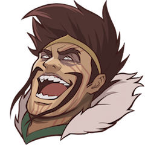
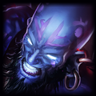
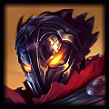

| Buff | Nerf | Lil' bit of both | Change | New | u mad? | Excite |
|---|---|---|---|---|---|---|
|  |  |
 |
 |
 |
 |
 |
EDIT: I tried to get to most of your questions and I apologize if I missed any. TY Based God. Same.
CHAMPIONS
| Champion | Buff/Nerf/Change | Patch |
|---|---|---|
 Ahri Ahri |
|
Charm no longer stops dashes in their tracks. |
 Ashe Ashe |
Q stacks fall off one at a time. Q duration increased. | |
 Caitlyn Caitlyn |
|
E cooldown lowered. W headshot bonus changed from a percentage to a flat bonus. |
 Ezreal Ezreal |
|
R cooldown up. |
 Fiora Fiora |
|
W cooldown up. E cooldown down, but starts after the attacks finish. |
 Gangplank Gangplank |
|
Q gold generation down. Maximum barrels down. |
 Illaoi Illaoi |
Illaoi is now immune to being displaced while in her cast animation for R. | |
 Jhin Jhin |
Movement speed, health regen and regen per level increased. Passive mini-crits towers. | |
 Katarina Katarina |
Q damage no longer falls off. Detonation ratio up. | |
 Kog'Maw Kog'Maw |
|
Attack speed down. |
 Lucian Lucian |
|
R range down. |
 Malphite Malphite |
|
Health regen and E damage down. |
 Rumble Rumble |
|
E works on an ammo system. |
|  Ryze | Q damage up. | |
 Shen Shen |
E affects monsters. | |
 Sivir Sivir |
W's bounces now crit. | |
 Tahm Kench Tahm Kench |
|
Q width down. R has a brief delay before recast, but takes the same amount of time to travel. |
 Udyr Udyr |
|
W shield and R's on-hit damage down. |
|  Viktor | |
A little less death in his ray. E damage down. |
 Xin Zhao Xin Zhao |
|
W AP ratio and attack speed lowered. |
ITEMS
| Item | Buff/Nerf/Change | Patch |
|---|---|---|
| Boots of Swiftness | |
Movement speed down. |
| Mercury's Treads | More tenacious! 20% -> 30%. | |
| Manamune | Now has Tear of the Goddess's stacking passive. | |
| Muramana | |
No longer a toggle. Now always consumes mana to deal damage, but only when fighting champions. |
| Runic Echoes | |
Movement speed down. |
| Iceborn Gauntlet | |
Size lowered, but gets larger with armor. Slow no longer lingers. |
| Sterak's Gage | |
Health down. Build path changed. |
| Titanic Hydra / Ravenous Hydra | |
Hydra's can no longer be swapped into one another |
MASTERIES
| Mastery | Buff/Nerf/Change | Patch |
|---|---|---|
| Warlord's Bloodlust | |
Now gives lifesteal based on your missing health. |
| [NEW] Expose Weakness | |
New Mastery added to Ferocity Tier 1, Damaging enemy champions causes them to take 3% increased damage from your allies. |
SUMMONER'S RIFT
| Thing | Buff/Nerf/Change | Patch |
|---|---|---|
| Lane Minions | |
The first wave of minions can't be obstructed. |
DOMINION
| Thing | Buff/Nerf/Change | Patch |
|---|---|---|
| Dominion | |
Dominion and the Crystal Scar were disabled on February 22. |
NEW CHAMP SELECT
| Thing | Buff/Nerf/Change | Patch |
|---|---|---|
| Champ Grid | |
We enabled the champ grid at all phases of champ select so it's easier to think through prospective team comps and bans. |
| Pick Intent | |
You can now change your pick intent at all phases prior to final pick. |
| Mastery Page Bug | |
Fixed a bug where changing the name of a mastery page during champ select would not update the page's name in the drop down. |
BUGFIXES
| Fix |
|---|
| Poppy's R no longer deals dmg twice to epic monsters when fully charged. |
| Fixed a bug where Kindred wouldn't gain a stack if a targeted jg monster was killed too far away from spawn point. |
| Fixed a framerate issue that occured when an enemy Challenger Nidalee entered vision. |
| The eagle screech in Statue of Karthus' dance audio is no longer global for allies. |
SKINS
| Skin |
|---|
  Blood Moon Kennen Blood Moon Kennen |
  Blood Moon Yasuo Blood Moon Yasuo |